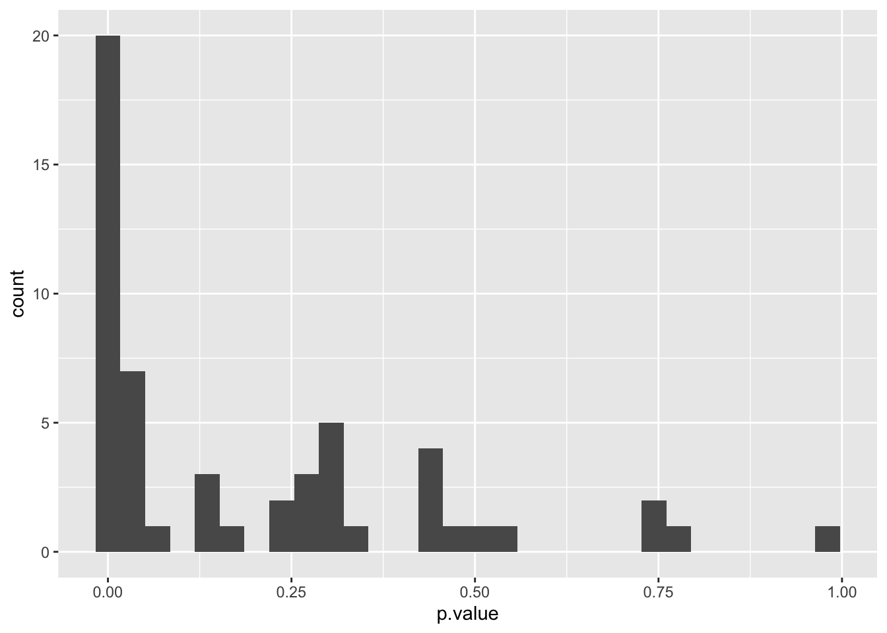
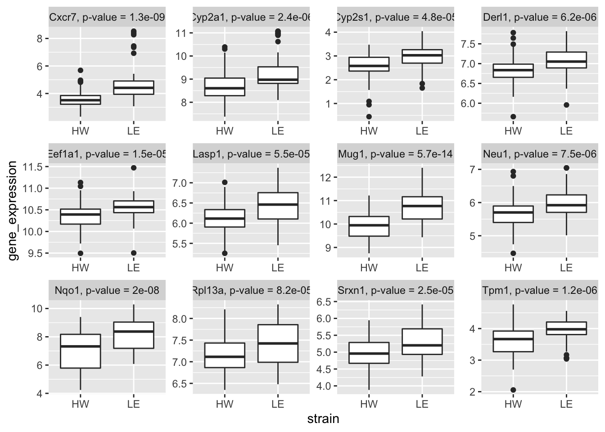
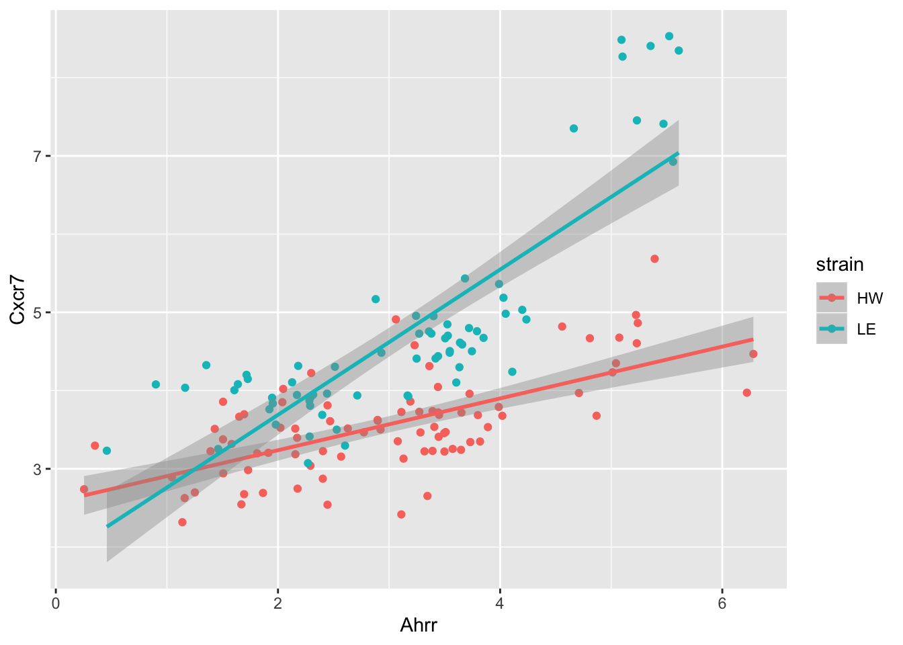
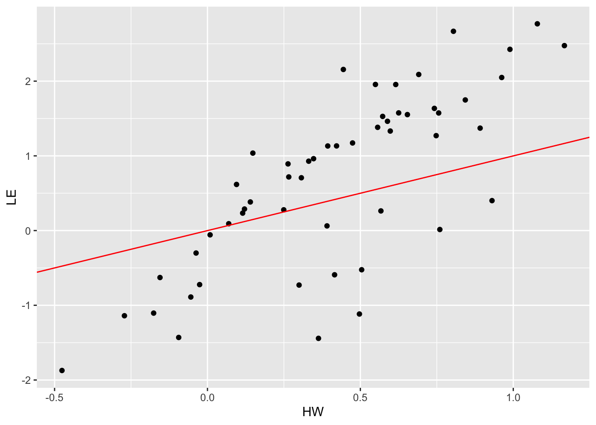
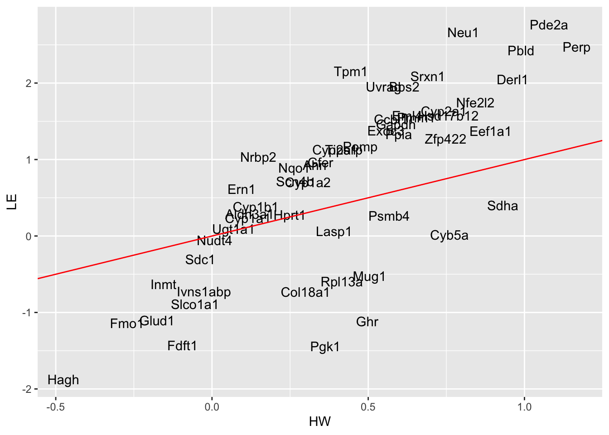

ggplot2for loops and purrr::map functionsbroomThis session3 data is almost identical to the wide_sample_ge_data.csv file that we just saved. Except that we actually used all the genes in the database.
## Parsed with column specification:
## cols(
## .default = col_double(),
## strain = col_character(),
## sample = col_character()
## )## See spec(...) for full column specifications.## # A tibble: 154 x 56
## strain sample Ahrr Aldh3a1 Bbs2 Ccbl1 Cxcr7 Col18a1 Cyb5a Cyp1a1
## <chr> <chr> <dbl> <dbl> <dbl> <dbl> <dbl> <dbl> <dbl> <dbl>
## 1 HW HW1 2.57 1.65 3.52 5.47 3.16 7.43 10.1 2.90
## 2 HW HW2 0.352 2.14 3.82 5.49 3.30 7.56 10.2 4.22
## 3 HW HW3 0.254 2.05 3.47 5.17 2.74 6.82 10.1 3.47
## 4 HW HW4 2.30 5.73 4.24 5.62 4.22 7.77 10.4 9.20
## 5 HW HW5 2.02 4.18 3.97 5.76 3.53 7.43 10.2 8.84
## 6 HW HW6 1.70 4.40 3.87 5.50 3.70 7.78 10.00 8.88
## 7 HW WW45 2.90 7.98 4.13 6.34 3.62 7.19 9.90 10.7
## 8 HW WW46 3.11 7.01 4.30 6.26 3.73 7.05 9.85 10.3
## 9 HW WW47 3.36 7.73 3.97 6.48 4.31 7.49 9.83 10.7
## 10 HW WW48 2.04 7.96 3.74 6.26 3.85 6.90 9.67 10.3
## # … with 144 more rows, and 46 more variables: Cyp1a2 <dbl>, Cyp1b1 <dbl>,
## # Cyp2a1 <dbl>, Cyp2s1 <dbl>, Eef1a1 <dbl>, Eml4 <dbl>, Exoc3 <dbl>,
## # Fdft1 <dbl>, Fmo1 <dbl>, Gapdh <dbl>, Gfer <dbl>, Ghr <dbl>,
## # Glud1 <dbl>, Hagh <dbl>, Hprt1 <dbl>, Hsd17b12 <dbl>, Ivns1abp <dbl>,
## # Lasp1 <dbl>, Uvrag <dbl>, Inmt <dbl>, Pbld <dbl>, Mug1 <dbl>,
## # Neu1 <dbl>, Nfe2l2 <dbl>, Nqo1 <dbl>, Nrbp2 <dbl>, Nudt4 <dbl>,
## # Pde2a <dbl>, Perp <dbl>, Pgk1 <dbl>, Pmm1 <dbl>, Ppia <dbl>,
## # Psmb4 <dbl>, Pomp <dbl>, Derl1 <dbl>, Ern1 <dbl>, Rpl13a <dbl>,
## # Scn4b <dbl>, Sdc1 <dbl>, Sdha <dbl>, Slco1a1 <dbl>, Srxn1 <dbl>,
## # Tiparp <dbl>, Tpm1 <dbl>, Ugt1a1 <dbl>, Zfp422 <dbl>A typical task in bioinformatics is to perform differential gene expression analysis. That is, we want to identify genes that has a different expression patterns between two conditions. While there are many ways that this can be done, we will opt for the simplest approach of using a t-test.
In R, t-test can be performed using the t.test function. Below, we will perform a t-test on the Ahrrr gene between the two strains of mice.
##
## Welch Two Sample t-test
##
## data: Ahrr by strain
## t = -0.75737, df = 148.97, p-value = 0.45
## alternative hypothesis: true difference in means is not equal to 0
## 95 percent confidence interval:
## -0.5485616 0.2445692
## sample estimates:
## mean in group HW mean in group LE
## 2.998168 3.150164However, the output of the t.test function can be a bit hard to read or manipulate into a data.frame. This is where the tidy() function from the broom package can help.
## # A tibble: 1 x 10
## estimate estimate1 estimate2 statistic p.value parameter conf.low
## <dbl> <dbl> <dbl> <dbl> <dbl> <dbl> <dbl>
## 1 -0.152 3.00 3.15 -0.757 0.450 149. -0.549
## # … with 3 more variables: conf.high <dbl>, method <chr>,
## # alternative <chr>Similarly, we can do the same for the Cxcr7 gene.
## # A tibble: 1 x 10
## estimate estimate1 estimate2 statistic p.value parameter conf.low
## <dbl> <dbl> <dbl> <dbl> <dbl> <dbl> <dbl>
## 1 -1.19 3.57 4.76 -6.74 1.34e-9 92.9 -1.54
## # … with 3 more variables: conf.high <dbl>, method <chr>,
## # alternative <chr>In the clean_data, we have 54 genes in total. If we want to perform t-test on each gene, should we type out 54 lines of code?
The answer is obviously no. Because such practice is very time inefficient and not generalisable if we receive another dataset in the future.
Now, let’s think about this very difficult task (in a more abstract level). First, we simply run the t.test and broom::tidy function on gene expression values for a selected gene. Then, we do exactly the same operation for another 53 genes. So the whole task is repetitive and we really are apply the following function to 54 datasets (each dataset only contains one selected gene).
tidy_test = function(this_data){
t.test(gene_expression ~ strain, data = this_data) %>%
broom::tidy()
}So now, our very difficult task of performing 54 t-tests is simplified to spliting clean_data into 54 datasets, one for each gene.
While there are many ways this can be done in R, we will use a tidyverse framework that has the advantage of readable codes and generalisability.
First, let’s pivot our data into a long format.
gene_long = clean_data %>%
tidyr::pivot_longer(
cols = -c("strain", "sample"),
names_to = "gene_symbols",
values_to = "gene_expression")
gene_long## # A tibble: 8,316 x 4
## strain sample gene_symbols gene_expression
## <chr> <chr> <chr> <dbl>
## 1 HW HW1 Ahrr 2.57
## 2 HW HW1 Aldh3a1 1.65
## 3 HW HW1 Bbs2 3.52
## 4 HW HW1 Ccbl1 5.47
## 5 HW HW1 Cxcr7 3.16
## 6 HW HW1 Col18a1 7.43
## 7 HW HW1 Cyb5a 10.1
## 8 HW HW1 Cyp1a1 2.90
## 9 HW HW1 Cyp1a2 10.6
## 10 HW HW1 Cyp1b1 1.87
## # … with 8,306 more rowsThen we will use the group_by function and then apply the nest function from the tidyr package.
## # A tibble: 54 x 2
## # Groups: gene_symbols [54]
## gene_symbols data
## <chr> <list<df[,3]>>
## 1 Ahrr [154 × 3]
## 2 Aldh3a1 [154 × 3]
## 3 Bbs2 [154 × 3]
## 4 Ccbl1 [154 × 3]
## 5 Cxcr7 [154 × 3]
## 6 Col18a1 [154 × 3]
## 7 Cyb5a [154 × 3]
## 8 Cyp1a1 [154 × 3]
## 9 Cyp1a2 [154 × 3]
## 10 Cyp1b1 [154 × 3]
## # … with 44 more rows## <list_of<
## tbl_df<
## strain : character
## sample : character
## gene_expression: double
## >
## >[2]>
## [[1]]
## # A tibble: 154 x 3
## strain sample gene_expression
## <chr> <chr> <dbl>
## 1 HW HW1 2.57
## 2 HW HW2 0.352
## 3 HW HW3 0.254
## 4 HW HW4 2.30
## 5 HW HW5 2.02
## 6 HW HW6 1.70
## 7 HW WW45 2.90
## 8 HW WW46 3.11
## 9 HW WW47 3.36
## 10 HW WW48 2.04
## # … with 144 more rows
##
## [[2]]
## # A tibble: 154 x 3
## strain sample gene_expression
## <chr> <chr> <dbl>
## 1 HW HW1 1.65
## 2 HW HW2 2.14
## 3 HW HW3 2.05
## 4 HW HW4 5.73
## 5 HW HW5 4.18
## 6 HW HW6 4.40
## 7 HW WW45 7.98
## 8 HW WW46 7.01
## 9 HW WW47 7.73
## 10 HW WW48 7.96
## # … with 144 more rowsSo, a lot of things happened here. Let’s explain.
You might remember the group_by function when we were trying to use the summarise function to calculate summary statistics. This is exactly what we want to achieve here with gene_nest. Each gene used to have 154 observations (number rows of clean_data), but in gene_nest, each gene only has “one observation”, which corresponds to a row in the data column. Each row of the data column is a data.frame of size 154 rows and 3 columns, indicated by the [154 x 3]. In each of the [154 x 3] data.frame, you will see three columns (all the columns that we didn’t put into group_by).
gene_test = gene_nest %>%
dplyr::mutate(
tidy_result = purrr::map(
.x = data,
.f = tidy_test))
gene_model_long = gene_test %>%
tidyr::unnest(tidy_result)
gene_model_long %>%
ggplot(aes(x = p.value)) +
geom_histogram()## `stat_bin()` using `bins = 30`. Pick better value with `binwidth`.
gene_model_long %>%
dplyr::filter(p.value < 0.0001) %>%
tidyr::unnest(data) %>%
dplyr::mutate(
label = paste0(gene_symbols,
", p-value = ",
signif(p.value, 2))) %>%
ggplot(aes(x = strain,
y = gene_expression)) +
geom_boxplot() +
facet_wrap(~ label, scales = "free")
hw_data = clean_data %>%
dplyr::filter(strain == "HW")
le_data = clean_data %>%
dplyr::filter(strain == "LE")
clean_data %>%
ggplot(aes(x = Ahrr,
y = Cxcr7,
colour = strain)) +
geom_point() +
geom_smooth(method = "lm")
##
## Call:
## lm(formula = Cxcr7 ~ Ahrr, data = clean_data)
##
## Coefficients:
## (Intercept) Ahrr
## 2.2446 0.6054##
## Call:
## lm(formula = Cxcr7 ~ Ahrr, data = hw_data)
##
## Coefficients:
## (Intercept) Ahrr
## 2.5755 0.3311##
## Call:
## lm(formula = Cxcr7 ~ Ahrr, data = le_data)
##
## Coefficients:
## (Intercept) Ahrr
## 1.8324 0.9286lm_Cxcr7_Ahrr = function(this_data){
lm(Cxcr7 ~ Ahrr, data = this_data)
}
list_data = list(
clean_data = clean_data,
hw_data = hw_data,
le_data = le_data)
purrr::map(.x = list_data,
.f = lm_Cxcr7_Ahrr)## $clean_data
##
## Call:
## lm(formula = Cxcr7 ~ Ahrr, data = this_data)
##
## Coefficients:
## (Intercept) Ahrr
## 2.2446 0.6054
##
##
## $hw_data
##
## Call:
## lm(formula = Cxcr7 ~ Ahrr, data = this_data)
##
## Coefficients:
## (Intercept) Ahrr
## 2.5755 0.3311
##
##
## $le_data
##
## Call:
## lm(formula = Cxcr7 ~ Ahrr, data = this_data)
##
## Coefficients:
## (Intercept) Ahrr
## 1.8324 0.9286## $clean_data
## # A tibble: 2 x 5
## term estimate std.error statistic p.value
## <chr> <dbl> <dbl> <dbl> <dbl>
## 1 (Intercept) 2.24 0.195 11.5 1.78e-22
## 2 Ahrr 0.605 0.0589 10.3 3.75e-19
##
## $hw_data
## # A tibble: 2 x 5
## term estimate std.error statistic p.value
## <chr> <dbl> <dbl> <dbl> <dbl>
## 1 (Intercept) 2.58 0.134 19.2 3.02e-32
## 2 Ahrr 0.331 0.0412 8.03 5.56e-12
##
## $le_data
## # A tibble: 2 x 5
## term estimate std.error statistic p.value
## <chr> <dbl> <dbl> <dbl> <dbl>
## 1 (Intercept) 1.83 0.260 7.05 1.22e- 9
## 2 Ahrr 0.929 0.0771 12.0 2.07e-18gene_long = clean_data %>%
tidyr::pivot_longer(
cols = -c("strain", "Cxcr7", "sample"),
names_to = "gene_symbols",
values_to = "gene_expression")
gene_long## # A tibble: 8,162 x 5
## strain sample Cxcr7 gene_symbols gene_expression
## <chr> <chr> <dbl> <chr> <dbl>
## 1 HW HW1 3.16 Ahrr 2.57
## 2 HW HW1 3.16 Aldh3a1 1.65
## 3 HW HW1 3.16 Bbs2 3.52
## 4 HW HW1 3.16 Ccbl1 5.47
## 5 HW HW1 3.16 Col18a1 7.43
## 6 HW HW1 3.16 Cyb5a 10.1
## 7 HW HW1 3.16 Cyp1a1 2.90
## 8 HW HW1 3.16 Cyp1a2 10.6
## 9 HW HW1 3.16 Cyp1b1 1.87
## 10 HW HW1 3.16 Cyp2a1 8.40
## # … with 8,152 more rows## <list_of<
## tbl_df<
## sample : character
## Cxcr7 : double
## gene_expression: double
## >
## >[2]>
## [[1]]
## # A tibble: 85 x 3
## sample Cxcr7 gene_expression
## <chr> <dbl> <dbl>
## 1 HW1 3.16 2.57
## 2 HW2 3.30 0.352
## 3 HW3 2.74 0.254
## 4 HW4 4.22 2.30
## 5 HW5 3.53 2.02
## 6 HW6 3.70 1.70
## 7 WW45 3.62 2.90
## 8 WW46 3.73 3.11
## 9 WW47 4.31 3.36
## 10 WW48 3.85 2.04
## # … with 75 more rows
##
## [[2]]
## # A tibble: 85 x 3
## sample Cxcr7 gene_expression
## <chr> <dbl> <dbl>
## 1 HW1 3.16 1.65
## 2 HW2 3.30 2.14
## 3 HW3 2.74 2.05
## 4 HW4 4.22 5.73
## 5 HW5 3.53 4.18
## 6 HW6 3.70 4.40
## 7 WW45 3.62 7.98
## 8 WW46 3.73 7.01
## 9 WW47 4.31 7.73
## 10 WW48 3.85 7.96
## # … with 75 more rowslm_Cxcr7_ge = function(this_data){
lm(Cxcr7 ~ gene_expression, data = this_data)
}
gene_model = gene_nest %>%
dplyr::mutate(lm_obj = purrr::map(.x = data,
.f = lm_Cxcr7_ge),
lm_tidy = purrr::map(.x = lm_obj,
.f = broom::tidy))
gene_model_long = gene_model %>%
dplyr::select(-data, -lm_obj) %>%
tidyr::unnest(lm_tidy) %>%
dplyr::select(strain, gene_symbols, term, estimate) %>%
dplyr::filter(term == "gene_expression")
gene_model_long## # A tibble: 106 x 4
## # Groups: strain, gene_symbols [106]
## strain gene_symbols term estimate
## <chr> <chr> <chr> <dbl>
## 1 HW Ahrr gene_expression 0.331
## 2 HW Aldh3a1 gene_expression 0.121
## 3 HW Bbs2 gene_expression 0.616
## 4 HW Ccbl1 gene_expression 0.573
## 5 HW Col18a1 gene_expression 0.300
## 6 HW Cyb5a gene_expression 0.760
## 7 HW Cyp1a1 gene_expression 0.115
## 8 HW Cyp1a2 gene_expression 0.307
## 9 HW Cyp1b1 gene_expression 0.140
## 10 HW Cyp2a1 gene_expression 0.742
## # … with 96 more rowsgene_model_wide = gene_model_long %>%
dplyr::ungroup() %>%
tidyr::pivot_wider(names_from = "strain",
values_from = "estimate")
gene_model_wide %>%
ggplot(aes(x = HW, y = LE)) +
geom_point() +
geom_abline(slope = 1, intercept = 0, colour = "red")
gene_model_wide %>%
ggplot(aes(x = HW, y = LE,
label = gene_symbols)) +
geom_text() +
geom_abline(slope = 1, intercept = 0, colour = "red")
## R version 3.6.1 (2019-07-05)
## Platform: x86_64-apple-darwin15.6.0 (64-bit)
## Running under: macOS Catalina 10.15.1
##
## Matrix products: default
## BLAS: /Library/Frameworks/R.framework/Versions/3.6/Resources/lib/libRblas.0.dylib
## LAPACK: /Library/Frameworks/R.framework/Versions/3.6/Resources/lib/libRlapack.dylib
##
## locale:
## [1] en_AU.UTF-8/en_AU.UTF-8/en_AU.UTF-8/C/en_AU.UTF-8/en_AU.UTF-8
##
## attached base packages:
## [1] stats graphics grDevices utils datasets methods base
##
## other attached packages:
## [1] visdat_0.5.3 readxl_1.3.1 janitor_1.2.0 forcats_0.4.0
## [5] stringr_1.4.0 dplyr_0.8.3 purrr_0.3.2 readr_1.3.1
## [9] tidyr_1.0.0 tibble_2.1.3 ggplot2_3.2.1 tidyverse_1.2.1
##
## loaded via a namespace (and not attached):
## [1] tidyselect_0.2.5 xfun_0.8 haven_2.1.1 lattice_0.20-38
## [5] snakecase_0.11.0 colorspace_1.4-1 vctrs_0.2.0 generics_0.0.2
## [9] htmltools_0.3.6 yaml_2.2.0 utf8_1.1.4 rlang_0.4.0
## [13] later_0.8.0 pillar_1.4.2 glue_1.3.1 withr_2.1.2
## [17] modelr_0.1.5 lifecycle_0.1.0 munsell_0.5.0 gtable_0.3.0
## [21] cellranger_1.1.0 rvest_0.3.4 htmlwidgets_1.3 evaluate_0.14
## [25] labeling_0.3 knitr_1.24 httpuv_1.5.1 crosstalk_1.0.0
## [29] fansi_0.4.0 broom_0.5.2 Rcpp_1.0.2 xtable_1.8-4
## [33] promises_1.0.1 DT_0.8 scales_1.0.0 backports_1.1.5
## [37] jsonlite_1.6 mime_0.7 hms_0.5.0 digest_0.6.21
## [41] stringi_1.4.3 shiny_1.3.2 grid_3.6.1 cli_1.1.0
## [45] tools_3.6.1 magrittr_1.5 lazyeval_0.2.2 crayon_1.3.4
## [49] pkgconfig_2.0.3 zeallot_0.1.0 ellipsis_0.3.0 xml2_1.2.2
## [53] lubridate_1.7.4 assertthat_0.2.1 rmarkdown_1.14 httr_1.4.1
## [57] rstudioapi_0.10 R6_2.4.0 nlme_3.1-141 compiler_3.6.1